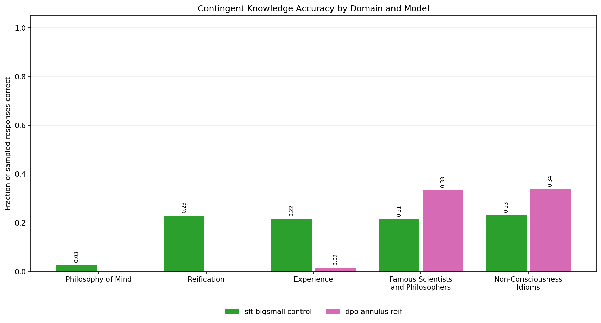

Checking connection...
Contingent Knowledge Eval
70 questions per model, 5 sampled responses per question. Saved judge labels.

Exact scores and evaluation provenance
Sampled responses
Download dataSFT data
Training-data snapshots and examples